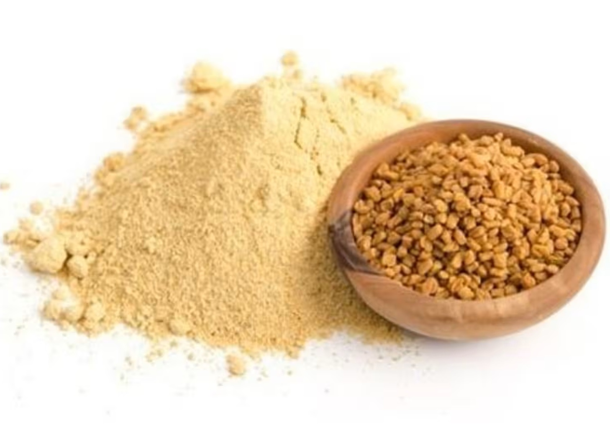

50 qr – 8 AZN
Mahləb (Prunus mahaleb) albalı ağacının toxumlarından əldə edilən təbii bitkidir.
Qədim dövrlərdən həm xalq təbabətində, həm də mətbəxdə istifadə olunur.
Mahləbin faydaları
- Orqanizmin ümumi güclənməsinə kömək edə bilər
- İmmunitet sistemini dəstəkləyə bilər
- Yorğunluq hissinin azalmasına dəstək ola bilər
Sinir və ürək sistemi üçün təsiri
- Sakitləşdirici xüsusiyyəti ilə tanınır
- Stressin azalmasına kömək edə bilər
- Yuxu keyfiyyətinin yaxşılaşmasına dəstək ola bilər
Mahləb necə istifadə olunur?
- Çay kimi dəmlənərək
- Bal və süd ilə qarışdırılaraq
- Şirniyyat və çörəklərə ədviyyat kimi
İstifadə zamanı diqqət
- Həddindən artıq istifadədən çəkinin
- Hamilə qadınlar üçün tövsiyə edilmir
- Xroniki xəstəliyi olanlar mütəxəssisə müraciət etməlidir